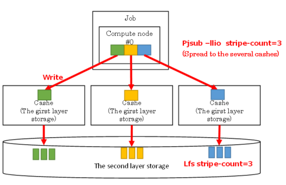
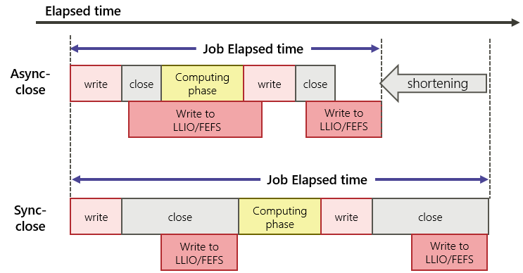
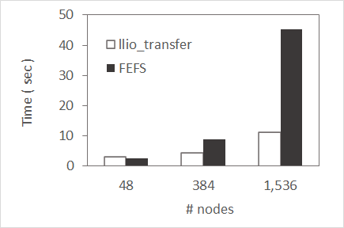

Second-layer storage uses FEFS (Large Scale, High Performance Parallel Distributed File System) based on the open source Luster technology.
For IO from a job (compute node) to the second-layer storage, it is accessed through the second-layer storage cache area. Enabling asynchronous close allows for faster writes to second tier storage during calculation processing. For details, refer to Option when Job submitting (pjsub --llio).
“Cache area of second-layer storage” is a cache area created for first tier storage.
By accessing the path of the second-layer storage, it is accessed via the second tier cache (high-speed device).
Refer to Disk for direct access to the second-layer storage.
This section describes the specifications of the cache area of the second-layer storage.
Specification of the cache area of the second-layer storage¶
Item
Characteristic
Reference area
Able to refer from all compute node.
Lifetime
It is retained if it is within the job execution time limit.
If a job is interrupted due to the job execution time limit being exceeded during writing to the second-layer storage, the cache area of the second-layer storage is deleted. Files that have not been exported are output to the file as a list of unexported files.
Also, if any of the following conditions are met, the cache in the cache area of the second-layer storage is deleted.
- if the file is deleted.
- if the cache area of second-layer storage becomes disk full.
(When the disk becomes full, it is removed from the old one by LRU method.)
- When Direct I/O (Either write or read) is performed.
Attention
LLIO maintains and manages read/write file data and metadata on the second-layer storage (FEFS) for fast access. Files written directly from second-layer storage during a job may not be visible from LLIO.
Therefore, do not perform read/write access to the same file in parallel from the second-layer storage cache area and the second-layer storage.
8.3.1. The Cache Area of Second-Layer Storage size¶
The area of the first-layer storage is secured from the SSD of the storage I / O node (SIO node) that handles input and output.
The size of the SSD allocated to one compute node is the capacity divided equally by the number of compute nodes in which one SIO node is responsible for input and output.
The Fugaku can use About 87GiB/node .
Approximately 87 GiB is divided into the temporary area within the node, the shared temporary area, and the cache area of the second-layer storage.
The cache area of the second-layer storage cannot be specified when executing a job.
Specify the capacity of the node temporary area and shared temporary area in the node, and the remaining capacity becomes the cache area of the second-layer storage.:
cache area of the second-layer storage= 87GiB - (node temporary area + shared temporary area)
Attention
The cache area of the second-layer storage must have a capacity of 128 MiB or more. If the capacity is less than 128 MiB, the following error occurs when the job is submitted. Please be careful when estimating the capacity of the temporary area and shared temporary area in the node.
[ERR.] PJM 0049 pjsub Option argument is invalid. sharedtmp-size + localtmp-size must be less than or equal to <size>
If the amount of cache area space in the second-layer storage is small relative to the cache usage of a job, the following events may occur:
Job may result in error.
Cache misses occur frequently and can slow IO speeds.
Writes to the second-layer storage are asynchronous with requests from Compute Nodes to write to the second-layer storage cache region. This asynchronous processing speeds up IO processing by parallelizing each process.
You can choose one of the following techniques to synchronize exports from Compute Nodes and make information visible from each Compute Node or Login Node:
Write using Direct I/O.
Issue sync (2) or fsync (2) after writing.
close (2) after writing. (When asynchronous close = OFF)
8.3.3.1. Stripe setting to second-layer storage cashe¶
By distributing and storing in multiple second-layer storage caches, file access bandwidth is improved. When submitting a job, the user specifies the stripe size and stripe count according to the I / O characteristics of the application. This enables efficient transfer to the second-layer storage cache.

This indicates example of setting stripe count 3.
$ pjsub--lliostripe-count=3jobscript.sh
Note
The environment currently provided has a maximum stripe count of 24.
Because sequential access to large files is rate-limiting to the performance of a single OST, you can choose to configure stripes for faster sequential access. By setting up stripes, you can distribute files across multiple OSTs and expect faster sequential access.
To set stripe, proceed with lfs setstripe command. This command is executed with FEFS client (login node, compute node).
Indicates the example of setting number of stripe 3.
Since The Fugaku can mount and access both FEFS (2ndfs) and The Cache Area of Second-Layer Storage, it is necessary to use the following on compute nodes.
【FEFS(2ndfs) Stripe setting】
$ /usr/bin/lfssetstripe-c3./output.file
【The Cache Area of Second-Layer Storage Stripe setting】
$ lfssetstripe-c3./output.file
If the stripe size of first-layer storage is not a multiple of the stripe size of second-layer storage, the performance of second-layer storage may not be gained. You can obtain the stripe size and stripe count of second-layer storage by using the getstripe sub command of the lfs command. You can change them by using the setstripe sub command of the lfs command. However, both of these operations must be performed within a job. Confirm the specification of the second-layer storage (FEFS) about available upper and lower limit of the stripe size and the stripe counts.
To second-layer storage cashe, there is a gap to performance/data writing guarantee depending on asynchronous close / synchronous close.

Notes on when Asynchronous closing is as below.
Asynchronous close starts writing to the first-layer storage and the second-layer storage from the cache in the compute node at the same time as the close. At the end of the close, writing to the first-layer storage and the second-layer storage is not guaranteed.
If the job is within the elapsed time limit, writing the file at the end of the job is guaranteed.
If the compute node goes down or the elapsed time limit is exceeded, the transfer from the cache in the compute node or the transfer from first-layer storage to the second-layer storage will be interrupted. Writing from the cache to the second-layer storage is not guaranteed.
To guarantee file output for a job, data must be written out explicitly during job execution, for example by enabling the synchronous close feature if necessary, or using the Writing timing to second-layer storage technique,or by performing a checkpoint restart in a user program.
A list of files that failed to be written to the second-layer storage can be obtained by specifying the pjsub option. When the following is specified, a list is output to path.
If a write from the first-layer storage to the second-layer storage is not completed at the end of a job, a message like the following is output to the standard error of the job by default.
<file transfer error information>
<summary>
total num: 3
total size: 128000000
error: E1,E3,E8
<detail>
E1 /gfs1/userA/outfile1
E1 /gfs1/userA/dir/outfile2
E3,E8 /gfs1/userA/dir/outfile3
If the number of unwritten files exceeds 1000, only the following message is output as detailed information.
<file transfer error information>
<summary>
total num: 1000*+
total size: 1348000000+
error: E1,E3,E8
<detail>
The detailed information is not output because the number of uncompleted files exceeds the upper limit (1000).
Check the unwritten file information and adjust the elapse limit of the job.
The following message is also generated when a job was interrupted due to the compute node down with or without LLIO.
<file transfer error information>
<summary>
total num: 0+
total size: 0+
error:
<detail>
In order to confirm that the job was interrupted due to the computing node down, please check the PC(PJM CODE) value of the pjstat and pjstata commands.
If the value of PC is 20, it means that the job was interrupted due to the computing node down.
8.3.5. Common file distribution function (llio_transfer)¶
Access is concentrated on files (common files) read from all compute nodes, such as executable files and configuration files on the the second-layer storage.
Use the common file distribution function as a function to avoid centralized access. The common file distribution function distributes common files to the cache area of the second-layer storage on the second-layer storage to distribute the concentration of access.
llio_transfer Distribute the common file with the command.
Only read-only files can be treated as common files.
Please refer to Notes on common files .
llio_transfer The command is a command used by the compute node and distributes files on the second-layer storage to the cache area of the second-layer storage on the first-layer storage.
Distributes the files to the cache area of the second-layer storage of the first-layer storage of all SIO nodes to which the job is assigned.
Jobs on the compute node distribute the access load on the SIO node by accessing the physically closest SIO node.
#!/bin/bash#PJM -L "node=382"#PJM -L "rscgrp=small"#PJM -L "elapse=1:00:00"#PJM --mpi "max-proc-per-node=4"#PJM --llio localtmp-size=10Gi#PJM --llio sharedtmp-size=10Gi#PJM -g groupname#PJM -x PJM_LLIO_GFSCACHE=/vol000N#PJM -s### Copy a.out to all SIOs used in the job (Common file distribution function)
llio_transfer./a.out
### Copy data from one process in a node
mpiexecsh-c'if [ ${PLE_RANK_ON_NODE} -eq 0 ]; then \ cp -rf ./data/ ${PJM_LOCALTMP} ; \ fi'### In node temporary file reference examples
ls${PJM_LOCALTMP}/data
### Execute using a.out in cache
mpiexec-stdout-proc./output.%j/%/1000r/stdout\-stderr-proc./output.%j/%/1000r/stderr\./a.out
### Delete a.out from second-layer storage cache### When deleting it in the middle of the job, purge as follows
llio_transfer--purge./a.out
### When the file result.data is executed before the job ends### In the directory $ {PJM_JOBDIR} (on second=layer storage cache),### Change to the name with job ID $ {PJM_JOBID} and evacuate (when necessary)
cp${PJM_LOCALTMP}/result.data${PJM_JOBDIR}/result_${PJM_JOBID}.data
### When the file output.data is executed before the job ends### In the directory $ {PJM_JOBDIR} (on the second-layer storage cache),### Change to the name with job ID $ {PJM_JOBID} and evacuate (when necessary)
cp${PJM_SHAREDTMP}/output.data${PJM_JOBDIR}/output_${PJM_JOBID}.data
Attention
llio_transfer Note the following regarding the common files copied to the cache of the second-layer storage by the command.
Operations such as deleting a common file via the cache area of the second-layer storage, updating file data, and updating file attributes will fail with an error.
llio_transfer is only available for read files.
The number of files that can be transferred as the common files is 16,384 or less. The number of files that a job can open as the common files at the same time is 1,024 or less.
File locking on the common files is not supported.
Do not change or delete the copy source of the common-layer in the second-layer storage while the job is executing.
If you change the copy source, the contents of the common files copied to the cache of the second-layer storage may become undefined.
Also, if it is deleted, the common file cannot be deleted with the --purge option of the llio_transfer command, and the cache area of the second-layer storage remains occupied by the common file until the job is completed.
When deleting the common file in the job script, specify the --purge option in the llio_transfer command and delete it. rm command fails with an error and cannot be deleted.
Immediately after deleting the common file from the cache of the second-layer storage with: command:llio_transfer --purge, the operation of deleting the copy source file of the common file from the job, updating the file data, and updating the file attribute may fail with an error.
The “cache area of the second-layer storage” of the first-layer storage, which is the copy destination of the common files, must have enough capacity to store the entire common files.
Common files copied to the cache area of the second-layer storage will not be deleted even if this area is full.If free space in the cache area of the second-layer storage is required, delete the common files from the cache area by specifying --purge option in llio_transfer command in the middle of the job. The common files in the cache area of the second-layer storage are automatically deleted after the job ends.
When the cache data of the transfer source file exists in the first-layer storage in the job before the command allocates the area of the common file, llio_transfer command will result in an error. Do not open the file in the job before executing llio_transfer command, as cached data may be created when the file is opened.
Common files such as execution files and input data are recommended to be distributed and used with llio_transfer command. It is more effective as the number of compute nodes used increases. For reference, here is information comparing the access of common files and files on the second-layer strage.
Execution files that requires a large number of modules
Compares the time required for compute nodes to load modules and start up, using a Python script with more than 600 files. Since there is only one server that processes meta requests for a common file on the second-layer storage, as the number of compute nodes increases and requests increase, processing takes time. When distributing as a common file with llio_transfer command, only one primary SIO accesses the second-layer sotrage and the request processing time is greatly minimized.
Execution files that requires a large number of input data
Compares startup times for programs that read a common file of 1GB per compute node. When reading a common file on the secondary-layer storage, access is concentrated on the server that manages the actual data. When distributing as a common file with llio_transfer command, the data in the second-layer storage is acquired by one primary SIO and efficiently distributed to another SIO, so that the data can be efficiently delivered to compute nodes and the data transfer time can be greatly minimized.

Attention
The figures are obtained during job operation and do not indicate the basic performance of the system.
The transfer time differs depending on the IO status of other jobs, the node shape allocated, and the common file size and number.
Since the transfer process of llio_transfer command is asynchronous and difficult to measure, we compare the time from the start of the program to the completion with mpiexec command.
Describes tips for identifying and distributing files referenced by programs.
When executing a program consisting of a large number of modules, distributing all the modules as common files is expected to reduce the start-up time of the program. However, it may be difficult to know all the files that are referenced by programs.
The following example identifies reference files with the strace command:
Modify the job script. Run a job as small as possible.
This example limits the log to collect open system calls with Rank=0 not to increase log size. If the log size is still large, please modify the program to exit after loading the modules.
8.3.5.3. Tool(dir_transfer) to transfer directories using llio_transfer command¶
A wrapper script of the llio_transfer command is provided to transfer all files under a specified directory as common files. Please pay attention to the number of files to distribute in using this wrapper script. Note that distributing unreferenced files wastes cache area and increases times to transfer to the second-layer storage.
Synopsis
Distribution operation:
/home/system/tool/dir_transfer [-l logdirname] dir1 [dir2 [...] ]
Delete operation:
/home/system/tool/dir_transfer -p [-l logdirname] dir1 [dir2 [...] ]
Options:
-l logdirname Save a common file list in directory specified by pathname.
If no directory path is given, save in the current directory.
-p Deletes a distributed common file.
Arguments:
dir1 [dir2 [...]] Specify directories to distribute or remove as common files.
Creates a file list in the directory specified by -l during the distribution or delete operation. If -l is not specified, this script generates output files in the current directory. Please delete the output files after the job finishes if necessary.
Here indicates the option about the second-layer storage cashe.
pjsub option
Description
sio-read-cache={on|off}
Specify whether to use the file read from the second-layer storage to the compute node as a cache of the second-layer storage.
on: Proceed cache. (Default value)
off: Does not proceed cashe.
stripe-count=count
Specify the number of stripes per file when distributing to multiple second-layer storage caches.(Default 24)
stripe-size=size
Specify the stripe size when distributing to multiple second-layer storage caches.
async-close={on|off}
Specify whether to close the file asynchronously. Specify synchronous / asynchronous close for the second-layer storage (FEFS) from the two tier storage cache. Note that this option affects the guarantee of data writing completion.
on: Asynchronous close
off: Synchronous close (Default value)
If on(Asynchronous close) is specified, write completion when file closing is not guaranteed.
If off(Synchronous close) is specified, write completion when file closing is guaranteed.
perf[,perf-path=path]
Output LLIO performance information to the file.
The output destination is under the current directory when the job is submitted, and the file name is the name defined by the job ACL function. The output destination file can be specified with the parameter perf-path.
uncompleted-fileinfo-path=path
At the end of the job, specify the output destination for information about files that have not yet been written to the second-layer storage. If not specified, it will be written to standard error output.